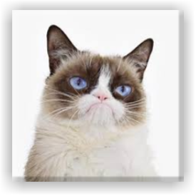
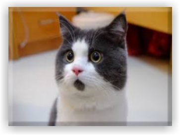
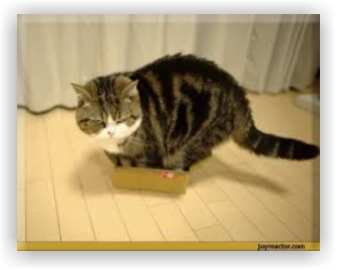

Famous Cats
Grumpy Cat
The feline that is always grumpy. This cat has taken over the Internet because of her facial expression.

OMG Cat
The feline that is always surprised. This cat actually has a black spot under its nose. Omg cat has appeared on Facebook several times.

Maru Master of Boxes
This cat loves boxes. If it can fit the box,it will squeeze inside!